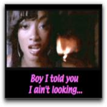

2.1 The Current State of Captioning and Descriptive Video on the Web
Video or audio streams and files, available over the web as part of many rich media presentations, are rarely presented in alternative formats. While the broadcast industry has addressed both captioning for people who are Deaf or Hard of Hearing and video description, which is the spoken description of visual content for people who are blind, the web's "audioscape" remains largely inaccessible.
While it is technically feasible, and some guidelines have been generated over the last several years, there are few current examples of captioning or descriptive video service (DVS) over the Web. Most of the available content is limited to simple captioning of a few sample content pieces, is usually offered by groups that focus on disability issues. A major reason for this dearth of captioned and DVS content is the lack of legislative requirements for these services. This is in sharp contrast to legislative requirements for broadcast captioning, and lately, start-up requirements for DVS.
MarbleMedia is one of the few new media companies to provide captioning of streaming video (www.deafplanet.com). The following example is from MarbleMedia's web site where they are currently providing short captioned clips from their TVO production, DeafPlanet. Deaf children make up a fair portion of the audience for a show that is geared to Deaf and Hearing children and their families.
Figure 6: Example of captioned streamed video.
For streamed video that isn't directed towards a disability group, the one mainstream exception regarding Web-based captioning is PBS. A number of its shows are provided on the Web with options for closed captioning. The following example from PBS (www.pbs.org) is just one of many available streaming videos that provide captioning.
Figure 7: Sample of captioned PBS video.
In each of the examples, captioning can be toggled off and on by selecting the appropriate button next to the video. Providing the caption controls next to the video itself gives the user a clear indication that captioning is available.
One of the only, and by default, best examples of rich media to make accessible culture is from the WGBH/NCAM (http://broadband.wgbh.org/quicktime/mpeg4/). In addition to captioning, in both English and Spanish, annotations, called "enhancements" here, are offered in different sections of the video stream.
Figure 8: Example of annotations with captions.
Other than a few instances of demonstrations that show examples of DVS, we have not found any instances of DVS on the Web.
2.2 There's No One Standard for Captioning and Description on the Web
There are a variety of media players available for the web, as well as a number of different approaches for creating web pages. As a result, there is no one approach for providing captioning and description over the web. Captions can be transmitted directly onto a Web page using conventional web tools, such as HTML, Javascript, and CGI, through a particular media tool such as Flash, one of the three major media players (Quicktime, Real, and Windows Media), or even by means of a chat service. (See the NCAM site at http://ncam.wgbh.org/richmedia/ for an exhaustive list of approaches and techniques for creating accessible rich media).
2.3 Style Guides for Captioning and Describing On the Web
While WGBH/NCAM and others offer a recommended guide to caption styles (http://main.wgbh.org/wgbh/pages/mag/services/captioning/faq/sugg-styles-conv-faq.html). Of particular value is a discussion on sentence breaks for making readable captions.
A similar online guide for video description is available as well from WGBH/NCAM (http://main.wgbh.org/wgbh/pages/mag/resources/archive/dvs_guide_06-24-2003.html).
These documents were created for broadcast and as a result are shaped by the technical limitations of the broadcast medium
2.4 Tools for Captioning and Describing on the Web
While a number of tools exist for broadcast captioning and description, only a few tools directly support adding captions or description to media for use on the Web. Video editors and software-based audio recording studios provide ways to add additional tracks that can be used to generate captions and description,, but these tools not well designed for such tasks, and as a result adding captioning and described video is far more difficult and time-consuming than necessary.
The most robust of the available tools currently on the market, is Magpie, which was developed by WGBH/NCAM (http://ncam.wgbh.org/Webaccess/magpie/#v2). Magpie lets authors produce captions and descriptions for different Web formats and media players. Magpie allows authors to add SMIL, SAMI, or QuickTime style captions and description.
The CNICE project has developed a tool for captioning and description that has let us begin to explore and demonstrate a number of "enhanced features" for captioning and description. The tool is tentatively called CapScribe, and like Magpie, provides both captioning and description. Currently, CapScribe provides support for adding text styles, graphics, and support for a second video window. CapScribe lets authors create SMIL files for QuickTime.
2.5 Possibilities for Captions and Describing on the Web
Traditional broadcast captioning provides a single mono-spaced font, size, style, and colour, usually white, appearing over a black background. We are restricted to the area of the broadcast screen itself, so all captions must be placed on the actual video. The broadcast is always time-based, with captions appearing and disappearing for the next set of captions. There's usually enough time to provide verbatim captioning, but often additional information such as speaker pitch and intonation, music, and background sounds, is not adequately conveyed if at all. The most notable change occurring with this format the past forty years has been the shift to mixed case captioning several years ago.
Figure 9: Example of traditional appearance, mixed case captioning.
Descriptive video is relatively new. There are several broadcast programs that provide descriptive video. DVS is limited by the amount of space between the spoken text that the describer has available for to provide descriptions of various visual information happening on the screen. Needless to say, only a small subset of visual information can be imparted to the listener under this constraint.
2.5.1 Captioning and the Web
There are no limits to how caption text can be presented on the web. All three media players support a full suite of text styles. Layout of captions is not limited to being placed over the actual video, but may be positioned off video when appropriate. Due to the small frame size of videos that are streamed on the web, it may make more sense to place text outside of the video, itself. In addition, text presented in different fonts, colours, and style can be used to identify speaker, content, emphasis, and even emotions. In the clip below, different fonts and colours are employed and positioned to the right of the video.
Figure 10: Example of captions with enhanced font styles.
Authors of original video content may choose to enhance the emotive tone of their subjects. In the following clips from the music video "Boy Like You" director Erica Shallow added enhanced captions to highlight the vocal styles of the different performers. Erica felt that having style control over her captions allowed her to capture the emotions and the energy that would otherwise go missing, and that standard captions would "flatten" the experience for the Deaf viewer.

Figure 11: Example of enhanced caption font style used to convey tone and energy.
Users can be presented with a menu of choices for how to view and interact with various content. One menu selection may offer content with basic captioning or description, while another provides a rich selection of captioning and or descriptive video experiences. Multiple language selections are most obvious, other options include, short and long descriptions, edited and verbatim captioning, or even captioning with graphics or animation.
A second video window option may provide sign language interpretation, or even mime or creative dance as a way to convey music and or sound effects. In the following example, both French and English captions are provided. This kind of flexibility provides much opportunity for letting users set different language preferences and yet enjoy the same experience.
Figure 12: Example of multilingual captions.
Graphics can be employed to convey feeling or even movement. Marblemedia's "Il Menu," a comical opera, was enhanced with comic art speech bubbles and icons. Using speech bubbles, words can have shapes around them, and be shaped themselves, to match the tones and affect that are produced by the speaker.
Figure 13: Example of graphics to convey language and sounds.
Graphics can be used to create dramatic effects that come closer in reproducing the impact of the original audio than plain text. The piano keys icon is marked by a red "x", indicating that the music has stopped. For the listener, the pausing of the music is quite unexpected; the "x" effect produces a similar sudden surprise visually for the caption user. Conventional captioning with text would have employed the words "Silence" or "Music stopped" which may not achieve the same effect that of the crossed out icon.
Figure 14: Example of graphics to convey silences and pauses.
In the following example, an animation was added to the opening scene of the TV series Rocket Science. The "CC" or closed caption symbol becomes a musical note which then moves and weaves through the show's opening animated sequence, both letting the user know about the music and giving a sense of the music itself.
Figure 15: Example of animation to convey sound elements of video
Interactivity can play a large role, well beyond turning the captions on and off. Interactive features can provide a means of getting more information than there is room for while the video is playing. For example, an iconic symbol can be used to indicate that additional information is available. Clicking on the appropriate button stops the video and shows the additional information. Interactivity can offer the user a better description of the music, background noise, or other information that would take up too much screen space.
Video description can overcome its broadcast time limitations on the web. For the user who needs descriptive video, interactivity offers the option to stop the action for an extended description where appropriate.
2.5.2 Description and the Web
The use of the web's natural interactivity allows for a number of enhancements for descriptive video. WGBH/NCAM has already begun using an approach called "extended description" as way to make addition time for descriptions. Extended description works by freezing the video and playing the description where there isn't sufficient time to adequately describe visual information. Currently, these extended descriptions are at the discretion of the author of the description and they happen automatically for the end user.
On the Web, with enhanced DVS, different description tracks can be made available to the user. A description track that focuses on what people are wearing, facial expressions, or landscape detail would serve to add missing components that sighted users take for granted.
2.6 Taking Time to Add Access To The Web
We've worked with a number of new media developers over the past several years. Our sense has been that the lack of access is more a lack of knowledge and tools than willingness. We presented several workshops on Access, New Media and Conversion Modalities at the Banff Interactive Screen Workshop in 2003. Participants began to appreciate that access was something that went beyond people with disabilities and could be potentially helpful to all.
For example, if the video stream suffers from poor audio quality , then with the additions of captions, the audio becomes intelligible-there is no ambiguity about what is being said. In a library or classroom environment, it may not be appropriate to view web content with audio on, in these settings, the captioning enables the content to be viewed without disrupting others. Described video is similarly useful and becomes a talking movie or tv show that you take on the road with you since the descriptions explain the action.
New media developer David Bastedo made the follow comment after attending one of our workshops:
There's a lot more to accessibility than just the disabled and while I think creating content specifically for the disabled is great, I think that there is more that should go into it than that.
Paul Ortchanian, another workshop participant, adds the following observation that seems at once representative and hopeful.
I was the type of person who was looking at these issues as being, kind of like, to be ignored, and now I'm seeing all of this value from it. I think that we should actually, as digital designers start looking at these things as actual benefits to what we are doing and just you know using them to go further
2.7 The CapScribe Tool
The lack of a fast, easy-to-use tool for the creation of accessible media motivated us to build a prototype tool in order to explore features that involved adding text, graphics, audio (for description) and additional video to make accessible clips. The tool, called CapScribe, outputs a QuickTime SMIL file, a small text file for managing captions, graphics description, and video files. As SMIL files are quite small, it is possible to offer a number of SMIL-based choices on a single Web page.
CapScribe combines captioning and descriptions so that new media developers will have access to a single tool to do both.
Its features include:
- A flexible text editor for adding captions with styles.
- A graphics library and importer for adding graphics
- A second video option for providing an additional video to accompany the primary video
- A recording studio for adding video descriptions
- A layout screen for designing media placement
- Output to SMIL or Quicktime formats for playback.
The following example is the main screen of the editor. It's set to the Caption option. A preview window lets the user look at the SMIL generated output.

Figure 16: CapScribe Tool
The CapScribe editor prototype will be made available for public use shortly after the conclusion of the CNICE project.
2.8 Online Captioning of Flash
Closed captioning for the web affords greater flexibility for the development of captions than that currently found in broadcast environments. This document section will provide a brief overview of current captioning practices as they relate to broadcast environments. Next follows a discussion of captioning techniques for web based Flash content. The section close with the introduction of a new tool for captioning Flash developed for the Canadian Network for Inclusive Cultural Exchange (CNICE) Project by marblemedia, a partner in the CNICE project.
Television and film producers have long used a relatively rigid method of closed captioning in which captions are primarily created offsite by experienced captioners using specialized equipment. Captions are then added to the Vertical Blanking Interval (VBI), in line 21 of the video signal. Limited by the resources available in the captioning decoders in set-top boxes, broadcast captioning is limited in the size, font and placement of the captions. Broadcast captions typically appear as white text on a black background. Techniques and guidelines for analogue television broadcast captioning have been created with these limitations in mind.
Web captioning differs remarkably from traditional broadcast captioning due to it's very lack of limitations. Where broadcast captioning is static in nature, captioning for the web is a much more creative process. In developing the captions, the developer and the captioner (who may actually be the same person) work together as a team. Together they are better able to manipulate the captioning process to meet the needs of the target audience from both a design and usability perspective. Most importantly, however web captioning allows the option for customization of the captions by the audience members.
For the purposes of this discussion, we will use the marblemedia project www.deafplanet.com as a case study, as it required extensive closed-captioning in the Flash environment. As a result, a Flash captioning tool was specifically designed to meet the needs of this site.
2.8.1 The Flash Captioning Tool
Developed by marblemedia, www.deafplanet.com is a companion site to a television series geared primarily to Deaf children. Both the television show Deaf Planet and its web site appear entirely in American Sign Language (ASL). As a result, www.deafplanet.com had specific design and usability requirements with respect to the video provided on the site. All episodes of the show are available on the site in video format, and due to the use of ASL, it was absolutely necessary that the video be of high enough quality that the ASL, and specifically the fingerspelling that forms part of the language, be easily visible and readable. Providing this video in a sufficiently high quality while not becoming "bandwidth excessive" could only occur through the use of Flash video. At the time of development there was no Flash captioning device available, so a tool was developed in-house by marblemedia to specifically to meet this need.
Developing captions in Flash allows the developers a great deal of control over the creative process. Unlike other web platforms, for example HTML, Flash reacts in a predictable way within a variety of browser (Internet Explorer, Netscape Navigator) and platform environments (PC, Mac). Furthermore, the Flash plug-in has an incredibly high market penetration; currently estimated to be in the area of 95%. In effect, the developers are able to control the captioning environment, by determining the placement, font size, and colour of the captions, without sacrificing ensuring user control.
2.8.2 Using the marblemedia Flash Captioning tool
In order to use the marblemedia Flash captioning tool, the video must first be converted into compressed Flash format and an audio script file completed. The audio script file must then be converted into a plain text format with any formatting or additional information stripped out. XML tags are added to the text that tell the captioning tool and website that the lines in the text file are captioned lines. Each spoken line of text is followed by a blank line (a space character), which then clears dialogue from the screen during times of inactivity. At this point in the development, the raw XML file of tagged alternating spoken dialogue and blank lines is complete, but does not contain any time coding information.
These files are now ready to be loaded into the Flash captioning tool. When the video that is to be captioned is loaded into the Flash captioning tool it will use file name assumptions to automatically find the captioning file. The tool allows the video to be played with regular start, stop, pause, rewind and fast forward controls. It also allows the user to navigate to specific frames within the video. By highlighting the text, the captioner can attach text to a specific frame. As the captioning tool only notes an in frame for the caption, blank lines of text are used to clear text off the screen during times of inactivity. The Flash captioning tool does not alter the video file, but merely adds frame information to the captioning text file. The captions, as developed by the captioner, are now visible upon playback of the Flash video in a web-based environment.
2.8.3 Techniques, Usability Issues and Further Considerations
Any form of video on the Internet invariably raises the issue of bandwidth and download speeds. The Flash captioning tool has successfully navigated some of these issues, but others remain. One of the key difficulties encountered in streaming video is the stalling that occurs due either to slow download speeds or bandwidth shortages. By adding tags to link the captioning file to the frame, the captions developed by this Flash captioning tool will never speed ahead of the video (should the download stall), nor lag behind. Therefore, when using the Flash captioning tool correctly, the captions and video should always be synchronized.
A method of alleviating user bandwidth difficulties is to allow users to choose between streams of video, with a user on a lower bandwidth able to choose a smaller video file than higher bandwidth users. The size of the Flash captions will not shrink with the size of the video stream viewed, ensuring that users who view a smaller bandwidth video stream still have captions that are readable.
The Flash captioning tool does encounter some difficulty in video streams that are compressed by decreasing the video's frame rate. As the captions are linked to the frames, a decrease in the frame rate means that the video and captions may no longer be in sync. Therefore, separate captioning files need to be created for video files that change in frame rate, even if they are the same video. If the frame rate remains the same, the same captioning file can be used. It is important to note that the captions created by the Flash captioning tool are contained in a small text file, and therefore demand relatively little in the area of user system resources and bandwidth.
At the current time, the Flash captioning tool only allows the user to turn the captions on or off. However, it would be relatively easy to adapt the Flash captioning tool to allow for greater user input. For example, captions created currently appear at the bottom of the Flash video. (Positioning the captions here, as opposed to on top of the video as in typical broadcast captioning, ensures that subtitles are not covered up.) A different user interface could easily allow the user to move the captions around their screen, and increase the font type, size or colour of the text. These kinds of user options would be especially useful in addressing access issues for people with visual impairments, as well, who may require larger text or captions with a greater contrast between text and background colors.
Furthermore, since turning the captioning "on" merely draws upon a text file, it could also be possible to use the Flash captioning tool to caption the video in multiple languages through the creation of multiple caption text files. Web users could then select which language they would prefer to view the captions in. Additionally, hyperlinks could be built directly into the captions to allow the user access to related information on web sites or in web based references.
One of the drawbacks of the current Flash captioning tool is that it does not allow the captioner to caption multiple areas of the screen at the same time. While this could be built in, it does have the disadvantage of making the final captioned product less flexible for the end user, as it may require the captioner to be more rigid in the positioning of the caption boxes.
2.8.4 Summary
It is difficult to apply the standards of broadcast captioning to web captioning, (specifically in the case of Flash captioning) as the development and viewing environments for the web differ radically from that of the broadcast environment. Where broadcast captioning exists in a very static environment with little user input, web captioning has the ability to meet a variety of accessibility needs and usability requirements. The developer and captioner can have a great deal more control over the artistic process of captioning the video than that available to broadcast captioners. With minimal expansion to the Flash captioning tool, there also exists an opportunity to make the captioning process interactive for the end user, by providing options regarding text style and positioning that traditional broadcast captions do not allow.
Box 2: An ASL Content Developer's Perspectiveby Elle Gadsby
On deafplanet.com we worked from a unique perspective. Typically web production and television production occur in two separate realms, with little communication between the two. Any television or film product that is utilized on the web is often merely streamed on the web, and the film production crew may not take into account the boundaries of streaming on the web. Throughout deafplanet.com our web team worked extremely closely with our television team, and all times decisions about the television production were made with an eye to how it would work on the web. Captioning for the web was merely an extension of this cross-communication between our web and television teams.
Captioning for American Sign Language (ASL) video streamed on the web has been an extremely positive experience for us as developers (www.deafplanet.com), as it has given us a great deal more control over the captioning process, and therefore the entire artistic expression and allowed us to fully capitalize on our unique integrated production process. Typically, traditional broadcast captioning is added to the video signal after all editing takes place, and once added cannot be altered. The process primarily occurs offsite as the last step in the post-production process before delivery to the broadcaster (or to VHS, DVD, etc). Unfortunately, this leads to several consequences, the most important of which is that it is difficult to correct any errors that are found and that it is difficult for the director or producer to maintain creative control over the captioning process.
Captioning for web video has allowed us to maintain a great deal more control, primarily because of the nature of the captioning itself. Our captioning file remains as a separate file from the video stream at all times. This means that any errors that are discovered can easily be corrected, at any point. More importantly, in-house captioning for the web has given more creative control over the final captioned ASL content. Through the traditional broadcast captioning process the director has a great deal of difficulty in maintaining control over the artistic nature expressed by the captioning, such as captioning any important environmental sounds, how long a caption remains on the screen, placement, etc. By captioning in-house, and due to the flexible nature of the captioning tool itself, we are able to edit the captioning in much the same manner as the video itself was edited. The director can review the video with captioning, make any necessary changes or alterations, add in or delete captions and then review the video again. Ultimately, this treatment has allowed us the creative control over the captioning process so that the final captioned video is a true and accurate reflection of the artist's original vision for the project.
We acknowledge the financial support of the Department of Canadian Heritage through the Canadian Culture Online Program